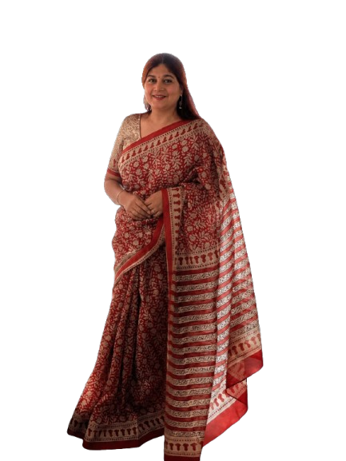

My story
I am a writer, poet, music lover, yoga enthusiast, and mother of two lovely girls. I love to write and read, sing, talk, and interact with people from all walks of life. I'm very good at being detailed and organized in my work — my assessment and comprehension skills are excellent, and my people skills are equally appreciated.
"I love to spend time doing what I love most — reading and writing. I wish to put this passion and skill to give back to my fraternity."
Hobbies & Interests: Music, books, Shayari, movies.
Education
MBA (HR)
BVIMR, New Delhi — 1992–1994
BSc (PCM)
Hansraj College, Delhi University — 1989–1992
Intermediate
Ramjas School, New Delhi, CBSE — 1989
Matriculation
Ramjas School, New Delhi, CBSE — 1987
Skills